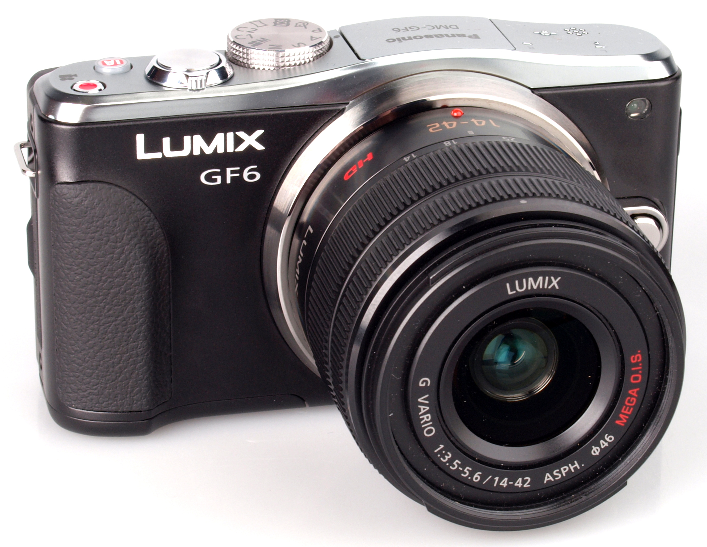

種類

中片幅是指相機的感測器大小為120畫幅的尺寸，感測器尺寸是針對與135尺寸和8X10的大畫幅而言的，而相機的結構本身可以多種多樣，可以呈旁軸相機結構，亦可以為SLR結構。中畫幅相機的感測器大小常見的規格有6x45，6x6，6x9等，還有不是那麼常見的6x7規格，但是此規格的成像更加細膩有致。
Pentax 645D
全片幅數碼單鏡頭反光相機是一類裝配有接近傳統 35 公釐膠片全尺寸（36 x 24 公釐）的影像感測器的數碼單鏡反光相機（DSLR）。所強調的全片幅（Full-Frame）是一種基於對比那些具備較小尺寸感測器的機型—— 一般為APS-C規格 ——的分類方式。在2007年的時候，絕大多數的數位單眼相機使用的都是小於 35 公釐規格的感測器——由於較小的尺寸的感測器較為的便宜，且易於處理。在2008年的下半年，數碼單反的幾家製造商，佳能，尼康與索尼紛紛推出了自己的中高檔135格式全片幅尺寸數碼單反相機。此舉宣告135全片幅在數碼單反市場普及在即。
使用135片幅的Sony A99
先進攝影系統C型（英文：Advanced Photo System type-C，縮寫：APS-C），是一種數位相機所使用的圖像感測器的規格之一。尺寸略等於先進攝影系統C型的大小，為 25.1 公釐 × 16.7 公釐，比例為 3：2。這種規格的感測器通常用在許多數位單眼相機上，同時也有一部分消費數位相機也採用了這種規格，例如索尼DSC-R1、適馬DP1、富士X100等。一些單電相機也採用這種規格，例如索尼NEX-5/3和三星NX10。然而APS-C規格的感測器確切的大小不是一樣的，但總體而言是小於35mm膠片（或稱全幅）規格，也就是 36 × 24 公釐。這就使得對比全幅，APS-C在相同的焦距下視角更窄。
使用APS-C片幅的Nikon D7100
微4/3系統（Micro Four Thirds system, MFT，或也簡寫為M4/3）是由奧林巴斯和松下公司（Panasonic）共同研發、在2008年8月5日發行的新一代可更換鏡頭相機鏡頭接環系統。與4/3系統不同，它取消了傳統單眼相機中大都會具備的反光鏡、五菱鏡等結構，使得相機機身變得更加小巧。嚴格來說，根據狹義的定義由於缺乏反光鏡結構，微4/3系統的相機已經不能稱為「單眼反光相機」，而是屬於電子式取景可換鏡頭相機（EVIL，或又常稱為「Mirrorless」）的型別。Olympus的一款微4/3系統相機然而，日本官方方面還是將之與DSLR同樣歸類於「數位一眼相機」（デジタル一眼）的範疇，主要考量的是其特性與單眼幾乎沒有差別（除機身厚度與反光鏡有無這兩點不同之外，舉凡光學、感光片幅構造與可換鏡頭特性都是一樣的）。
使用M4/3片幅的Olympus OMD EM1
特色是小巧輕便，操作簡單，價格較低。選擇內建的拍攝模式後，通常只要簡單的變焦構圖，即可按下快門獲得照片。調整對焦點。由於拍攝參數幾乎全部由相機自動判斷決定，因此在非泛用性場景時使用，操作較其他高階相機來的困難且品質不佳。
通常這類相機所使用的感光元件尺寸較小，大多為1/1.7"、1/2.5"、1/3"
Canon S95
單鏡反光相機（Single Lens Reflex Camera，簡稱：SLR camera，是一種相機的設計型式，其使用一塊放置在鏡頭與底片間的鏡子把來自鏡頭的圖像投射到對焦屏上。大部分單眼相機通過目鏡觀察五稜鏡反射來的圖像，但也有其它形式的取景器，例如俯視取景器。
自從1970年代起，這項技術開始得到廣泛應用，單鏡反光相機成為了高級攝影愛好者和專業攝影師的新寵。 單鏡反光相機最主要的優勢在於攝影者可以從取景器中直接觀察到通過鏡頭的影像，稱之為單軸反射式取景。許多現代的單鏡頭反光相機都提供了輔助對焦裝置，包括測距連動裝置和自動對焦功能。為了減少重量，許多現代的單鏡頭反光照相機用反光鏡代替了五稜鏡。 旁軸照相機使用一個額外的反光系統將影像反射到取景器上，這樣在取景框上得到的影像與鏡頭所拍攝的是有差別的。在攝影者與被攝物體距離較遠時這種差別並無大礙，但是當進行近距或微距拍攝時，這種差別就非常明顯。而單鏡反光相機則因取景和照相是同一光路，避免了近、微距攝像中的視差現象。 大多數單鏡反光相機具有快速更換鏡頭的能力，使相機的用途更加廣泛。同一台照相機可以用於肖像、風景、運動和微距拍攝。一些早期的非單鏡頭反光相機也具有這項能力。 大多數單鏡反光相機使用35mm的底片，這樣的大小為大多數攝影愛好者和一些專業應用平衡了照片品質、尺寸和成本等因素。注重大圖輸出品質的專業攝影師會使用較大片幅的單鏡反光相機。
單鏡反光相機光路圖
雙反相機（TLR, Twin-Lens Reflex），全稱為雙鏡頭反光鏡取景照相機，與單反相機（SLR, Single Lens Reflex）同屬反光取景式相機。
顧名思義，TLR系統最大的特點是具有兩個鏡頭，一個在另外一個的正上方。下面的鏡頭負責傳送影像到膠片上，而上面鏡頭傳送的影像只是用於取景和聚焦。人們所看到的影像是通過上面的鏡頭，而實際上只有下面的鏡頭才真正用於拍攝。

連動測距相機，是指取景用的取景窗和拍攝用的鏡頭光路相互獨立的照相機，取景窗所在的光路即為旁軸。由於不需要五稜鏡反射光線，旁軸相機相對而言可以造得更加輕便、小巧一些，傻瓜照相機基本均為旁軸相機。不過，旁軸相機中也有專業級的產品，如萊卡的M系列。光學相機和數位相機都可以造成旁軸的。
無反光鏡可換鏡頭相機MILC（下簡稱為「可換鏡頭相機」）。是一種鏡頭可以更換的數位相機，於2010年代後逐漸興起，屬於消費型數位相機與數位單眼相機之間的交集。與數位單眼相機不同處在於『MILC可換鏡頭相機』沒有使用反光鏡與五稜鏡的光學觀景窗系統來作取景用途。與類單眼相機不同處在於『MILC可換鏡頭相機』可以交換鏡頭，片幅通常也較大。
可換鏡頭相機是交換鏡頭的相機，它的特點是使用尺寸（片幅）與DSLR數位單眼反光相機接近或相同的感光元件（IMAGE SENSOR），其可更換鏡頭，但省去反光鏡結構。能拍攝跟數位單反相機一樣的高質量照片與相同的景深效果，但機身體積（尤其是在厚度上）一般比數位單反相機小。但因光學原理的關係，可換鏡頭相機所使用的鏡頭，其體積通常與感光元件尺寸相同的數位單眼相機所使用之鏡頭相當。 可換鏡頭相機的構造與鏡頭與數位單眼相機相似，也因此在使用與保養上和數位單眼相機並沒有太大的差別，例如換鏡頭時要避免入塵，以及每隔一段時間就必須要釋放快門讓機械快門簾幕活動以免故障。 由於推出之後在消費市場上的普及度越來越高，除了最早開始推動此類新規格產品的松下和奧林巴斯之外，包括三星、索尼、賓得士、佳能與尼康等製造商也陸續投入開發可換鏡頭相機的行列。
佳能（日語：キヤノン株式会社），是一家生產影像、光學、醫療設備、半導體工業設備和辦公自動化產品的日本企業製造商，產品包括照相機、攝像機、複印機、傳真機、影像掃描器、印表機、眼科及X射線成像設備、電影攝影機和鏡頭、半導體光刻機等。香港曾用錦囊為名，現全球統一中文譯名為「佳能」。

康泰時（Contax，或譯康泰克斯）原為德國蔡司公司(德文為Zeiss Ikon，蔡司．依康)於1932年生產旁軸相機（Range Finder）所使用的品牌，頭一個字母大寫，其餘小寫。二戰後，隨著德國的分裂，蔡司公司也一分為二。西德蔡司以Contax品牌繼續生產旁軸相機，東德蔡司則開始生產M42接環的單眼相機（SLR）。1971年，西德蔡司與日本Yashica公司合作，CONTAX就此復活，並成為Yashica公司製造販售、並採用卡爾．蔡司鏡頭的高級相機品牌（此時的CONTAX所有的字母均為大寫）。Yashica公司於1983年被京瓷公司併購，京瓷公司繼續負責康泰時相機的生產和銷售。
瓷於2004年縮減數位相機事業，2005年停產手動單眼鏡頭、終止數位相機事業，並於4月11日宣佈自該年9月起終止康泰時事務，康泰時品牌再度沉寂。
但現在許多攝影玩家仍然非常喜愛康泰時遺留下來的蔡司鏡頭
徠卡（Leica，又譯作萊卡）是一家著名的德國公司生產的相機的品牌，由萊茨（Leitz）和相機（camera）的前音節組成。公司的原名為恩斯特·徠茨公司，目前拆分為三家公司：徠卡相機、徠卡測量系統和徠卡顯微系統，分別生產相機、空間信息測量設備和顯微鏡。「徠卡」品牌由徠卡顯微系統持有，並授權另兩家公司使用。
萊卡相機以測距連動式為主要產品，其鏡頭也是攝影玩家間的逸品
尼康創建於1917年，當時原名日本光學工業株式會社（日本光学工業株式会社）。1988年該公司根據旗下暢銷照相機品牌「尼康」（Nikon），更改為目前名稱。「尼康」這名稱，是日本光學於1946年為配合當時新上市的眼鏡鏡片產品系列Pointar（ポインタール）而開始使用的，主要是取「日本光學」的日文羅馬字母拼音「Nippon Kōgaku」之字首縮寫。作為老牌軍工企業，尼康曾經生產過戰鬥機、轟炸機的瞄準具與潛艇的潛望鏡等軍工產品。至今尼康的產品仍廣泛被使用在日本及美國的主力戰車、軍艦和航空太空領域。在朝鮮戰場上，中國人民志願軍和聯合國軍交戰雙方均在使用由尼康生產的火炮測距儀和望遠鏡。由於尼康對日本光學工作的巨大貢獻，位於西大井的尼康相機部門門前的馬路，被命名為「光學大街」（光学通り）。
NIKON相機以消費型數位單眼為主，在全球有許多愛用者
奧林巴斯株式會社（オリンパス株式会社，Olympus Corporation）是一家精於光學與成像的日本公司。產品包括照相機、錄音機、內窺鏡與其他醫療設備。奧林巴斯於1919年創立，總部位於日本東京，美國基地位於賓夕法尼亞州艾倫鎮，歐洲總部位於德國漢堡市。
在底片時代時曾經靠著輕巧但高品質的設計引領輕便單眼的趨勢，數位時代後轉向M4/3系統發展，主打方便攜帶體積小及耐候性高的無反光鏡相機
Lumix是Panasonic的數位相機系列品牌，此系列的數位相機特別之處為28mm廣角鏡頭（部分機種）、MEGA O.I.S.光學防手震功能、高感光度（部份機種有「至醒」ISO功能），多數此系列的數位相機的鏡頭都是由萊卡（Leica）授權設計及製造。
Panasonic 的數位單眼為M4/3系統，主打小巧方便，力求打進隨身機市場
Panasonic GF6
現在一般人所熟知的相機製造商Pentax前身為設立在東京大塚的旭光學工業合資公司（創立於1919年11月，以下簡稱為旭光學）。創業初期的旭光學並不生產相機，而是間製造眼鏡鏡片的公司，之後開始製造電影放映鏡頭，1931年開始與小西六（之後的Konica）以及千代田光學精機（之後的Minolta）合作，為其相機設計、生產鏡頭。後來由於隨著日本的軍國化以及戰爭的關係旭光學開始為軍隊生產軍需品。戰爭結束時，失去了工廠及大部分員工的旭光學實際上已經是解散狀態。當時的社長松本三郎帶著所剩無幾的員工與新進員工希望重建公司。戰後的旭光學，靠著雙眼望遠鏡的鏡片加工重新站穩腳步。1948年5月，搭上日全蝕觀測風潮於北海道推出的低價望遠鏡獲得了市場極大的迴響，進而使社長決定將公司轉型，建立自有品牌。旭光學從此開始製造雙眼望遠鏡，並為三和商會的迷你相機生產鏡頭。該兩項產品都在市場上大受歡迎，而這次成功更使旭光學邁向另一個階段的挑戰。
Pentax的產品主打耐候性能和多變的顏色，買家可在官網上客製化自己想要的顏色
Sony自1997年第一台CyberShot F1問世以來至今，配合自身在硬體領域上的優異技術與卓越的CCD感光元件，另外搭載德國卡爾·蔡司（Carl Zeiss）鏡頭，目前在全球消費性數位相機市場取得佔有率第二。Sony擁有優異的影像感光元件技術，雖然與德國光學名廠卡爾·蔡司（Carl Zeiss）合作製造高階消費性數位相機，但無法與高階級的數位單眼相機（DSLR）抗衡。為此，2005年，Sony併購美能達相機部門（Minolta）進入數位單眼相機市場，以因應消費型數位相機市場的飽和。
Sony以突破性的功能和創新在相機市場中佔有一席之地，延續Minolta時期走在科技尖端的作風
廣角鏡的焦距短於標準鏡頭，視角寬於人眼。一般35毫米照相機的廣角鏡焦距是28毫米-35毫米，視角在76度-64度之間。廣角鏡視野寬闊，景深長。焦距範圍在15毫米-24毫米，視角在110度-84度之間，則為超廣角鏡頭。接近甚至大於180度角以上者為魚眼鏡頭。
廣角鏡多用於風景攝影
廣角鏡效果圖
在以往傳統 SLR 時代，所謂的「標準鏡頭」可以說是大多數135 SLR的標準配備，所以被稱為標準鏡頭。和其它的鏡頭相比，標準鏡頭所拍的照片顯得自然，效果平淡而真實，也常是入門攝影的首選。 在 135 全幅機上，標準鏡頭的焦距大約在45-55 mm之間，而最常見規格是50mm，這樣的鏡頭通常也具有 F2、F1.8、F1.4或F 1.2的最大光圈。如果是在APS-C片幅的機身上，標準鏡頭的焦段約在28-35mm之間，最常被拿來當標準鏡用的，應該是35mm的鏡頭。
標準鏡頭因為最接近人眼視角，所以常被使用在街拍或是snap shot及人文攝影
標準鏡效果圖
長焦鏡頭相對於標準鏡頭擁有較長的焦距，這類鏡頭的最大特色在於其視角小、拍攝景物空間涵蓋範圍小，故可強調景物的局部影像呈現。景深短，能使在背景雜亂環境下讓主題突顯。利用長鏡頭壓縮空間產生畸變效果，拉近前後景的距離感，誇張後景的效果。 長焦鏡頭適用在拍攝不易接近的景物，像是在野外拍攝大自然動物攝影、抓拍人物表情動作時，有些距離、動機或是照片呈現感覺等各因素狀況下，利用長焦鏡頭的特性把欲拍攝的景物拉近或放大突顯主題，像是拍攝日出日落或是月亮有放大特寫的效果。